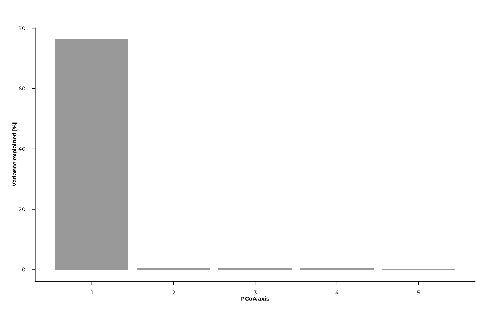
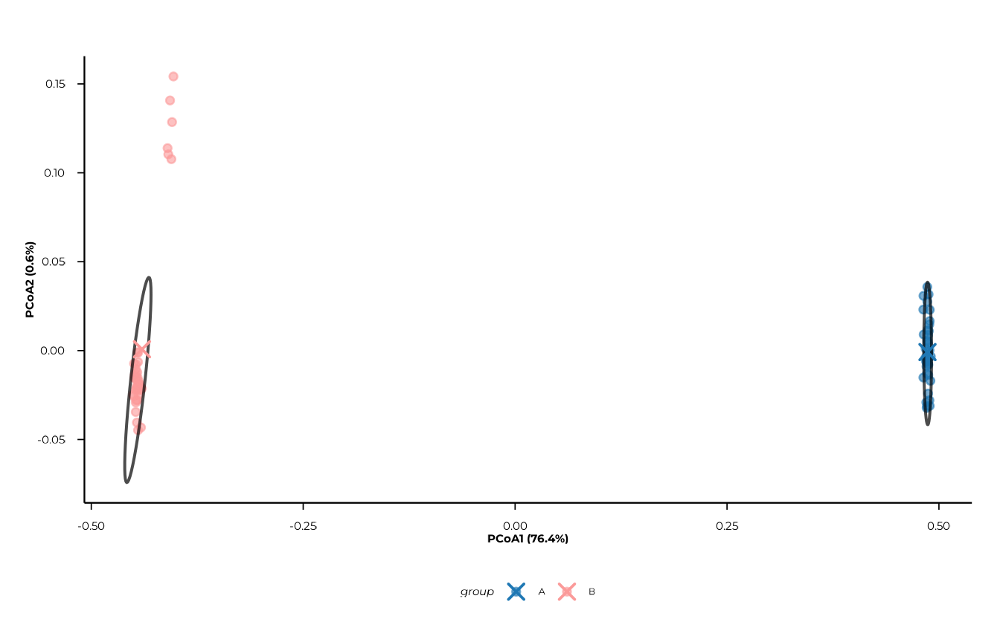
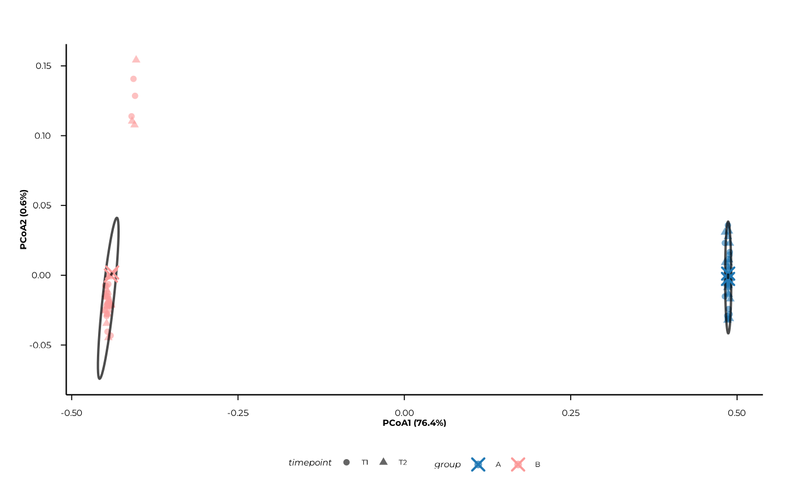
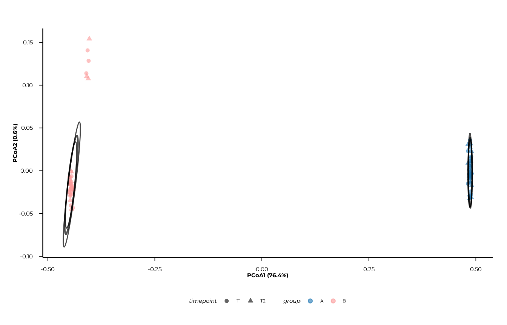
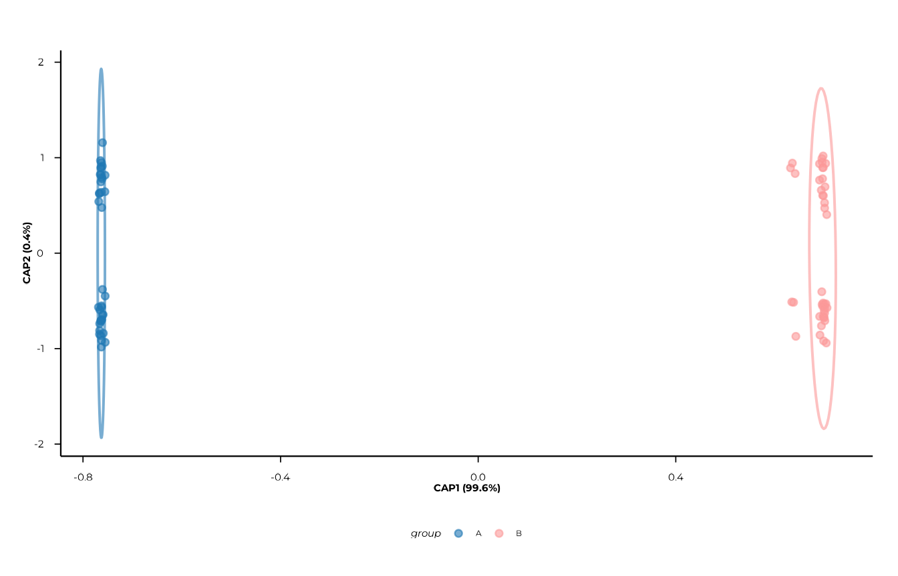
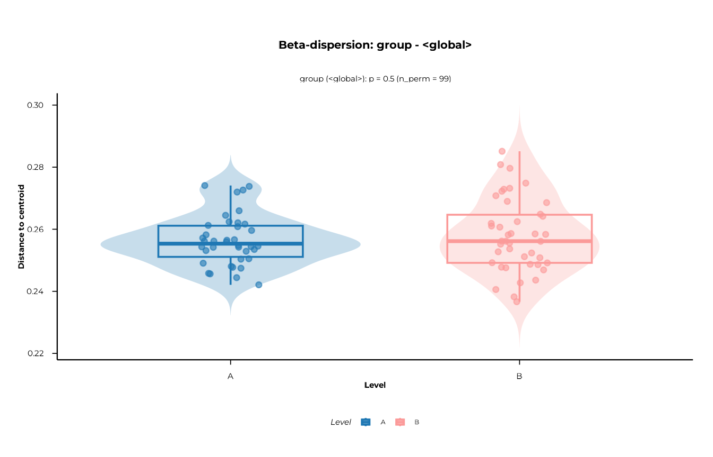
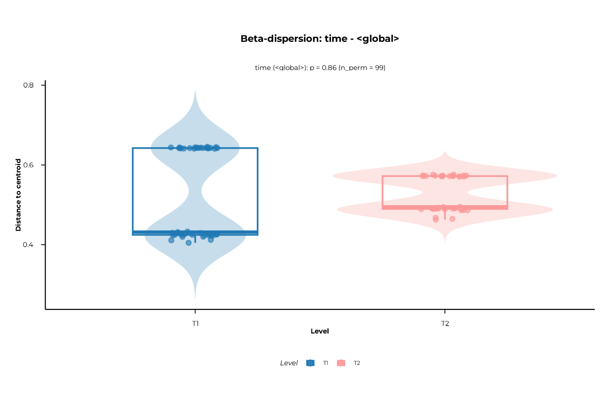
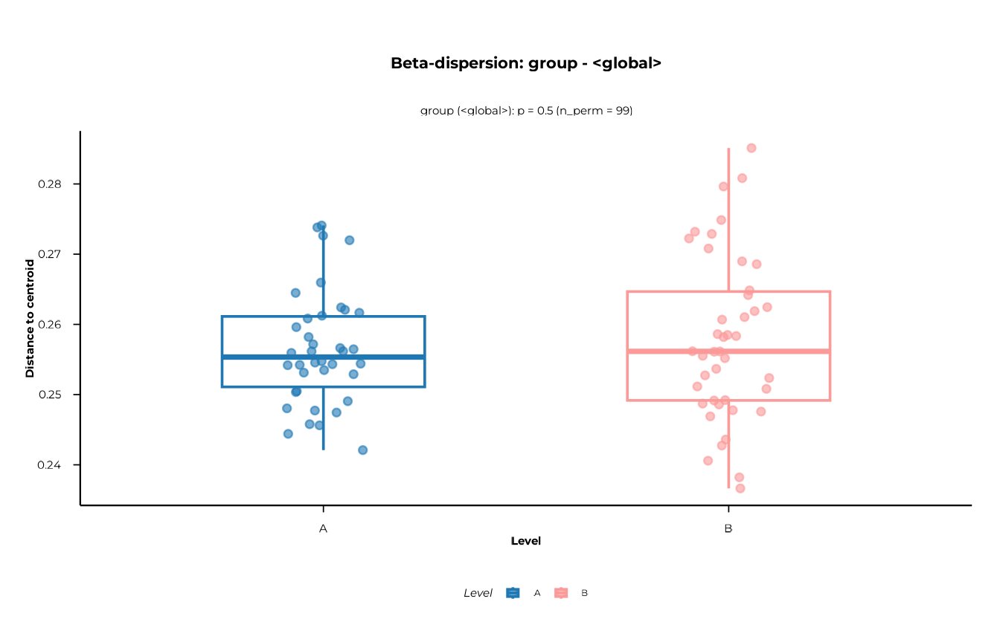
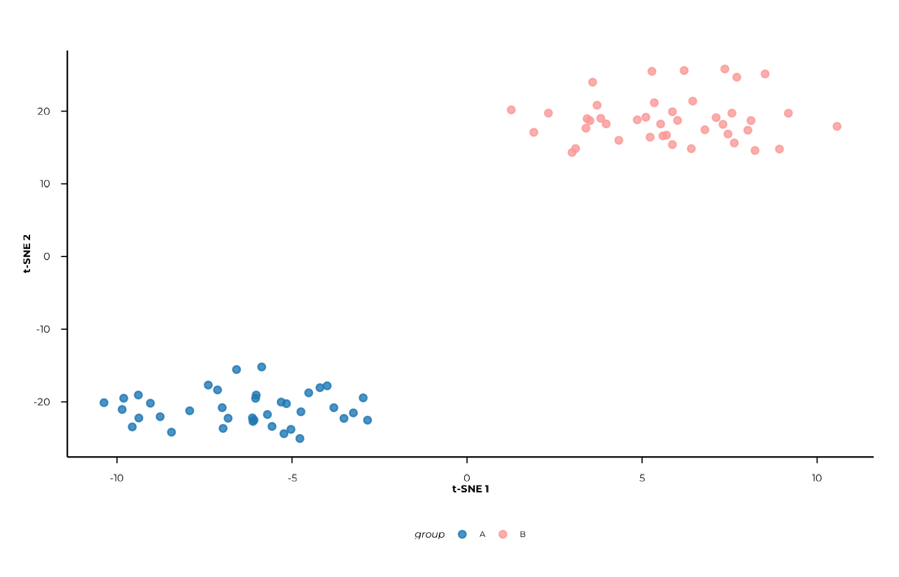
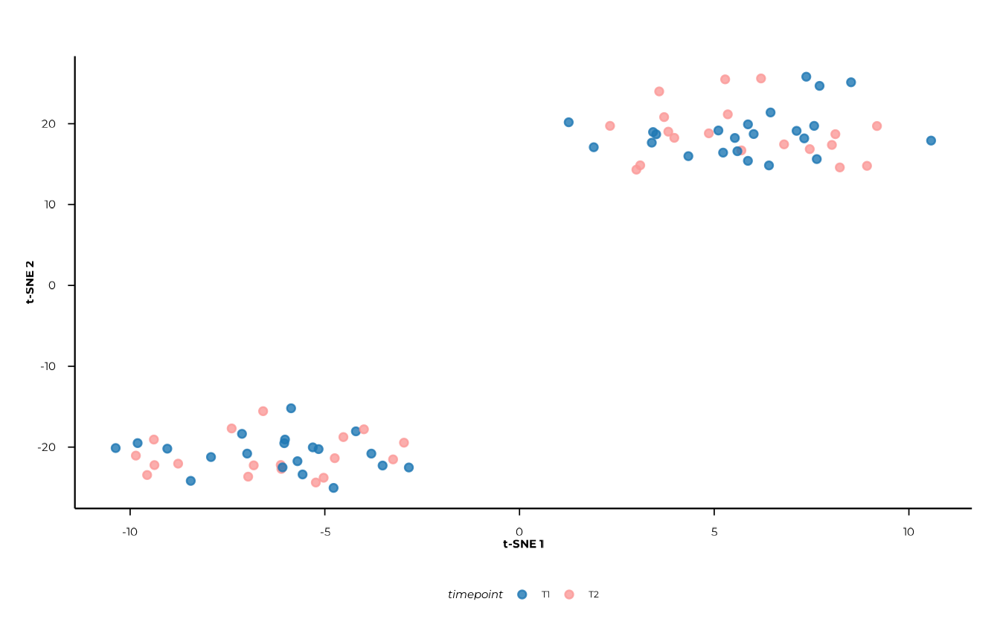

Overview
Beta diversity quantifies between-sample dissimilarity of antibody reactivity profiles. In PhIP-seq, each sample is represented by a vector of peptide presence/absence calls or continuous enrichment scores. Comparing these vectors reveals how similar or different individual immune repertoires are — and whether those differences are explained by group membership, disease status, or timepoint.
This vignette walks through the complete beta diversity workflow in phiper:
- Computing pairwise distances with
compute_distance() - Unconstrained ordination (PCoA) with
compute_pcoa(),plot_pcoa(), andplot_scree() - Feature–axis associations with
compute_pcoa_feature_associations() - Constrained ordination (CAP / db-RDA) with
compute_capscale()andplot_cap() - Permutation-based testing (PERMANOVA) with
compute_permanova() - Homogeneity of dispersion with
compute_dispersion()andplot_dispersion() - Non-linear embedding (t-SNE) with
compute_tsne()andplot_tsne()
Setup
Load the bundled example dataset. It contains two patient groups
(A, B) measured at two timepoints
(T1, T2) across 1 000 simulated peptides.
pd <- load_example_data()
#> [09:26:23] INFO Constructing <phip_data> object
#> -> create_data()
#> [09:26:23] INFO Fetching peptide metadata library via get_peptide_library()
#> [09:26:23] INFO Retrieving peptide metadata into DuckDB cache
#> -> get_peptide_library(force_refresh = FALSE)
#> [09:26:23] INFO Opened DuckDB connection
#> - cache dir:
#> /home/runner/.cache/R/phiperio/peptide_meta/phip_cache.duckdb
#> - table: peptide_meta
#> [09:26:23] OK Using cached download (SHA-256 match)
#> [09:26:26] OK Download complete and loaded into R
#> [09:26:31] INFO Importing sanitized metadata into DuckDB cache...
#> [09:26:33] OK peptide_meta table created in DuckDB cache
#> [09:26:33] OK Retrieving peptide metadata into DuckDB cache - done
#> -> elapsed: 10.063s
#> [09:26:33] OK Peptide metadata acquired
#> [09:26:33] INFO Validating <phip_data>
#> -> validate_phip_data()
#> [09:26:33] INFO Checking structural requirements (shape & mandatory columns)
#> [09:26:33] INFO Checking outcome family availability (exist / fold_change /
#> raw_counts)
#> [09:26:33] INFO Checking collisions with reserved names
#> - subject_id, sample_id, timepoint, peptide_id, exist,
#> fold_change, counts_input, counts_hit
#> [09:26:33] INFO Ensuring all columns are atomic (no list-cols)
#> [09:26:33] INFO Checking key uniqueness
#> [09:26:33] INFO Validating value ranges & types for outcomes
#> [09:26:33] INFO Assessing sparsity (NA/zero prevalence vs threshold)
#> - warn threshold: 50%
#> [09:26:33] INFO Checking peptide_id coverage against peptide_library
#> [09:26:34] INFO Checking full grid completeness (peptide * sample)
#> [09:26:34] OK Validating <phip_data> - done
#> -> elapsed: 0.719s
#> [09:26:34] OK Constructing <phip_data> object - done
#> -> elapsed: 10.786s
pd
#> ── <phip_data> ─────────────────────────────────────────────────────────────────
#>
#> counts (first 5 rows):
#> # A tibble: 5 × 9
#> sample_id subject_id group timepoint peptide_id exist counts_control
#> <chr> <chr> <chr> <chr> <chr> <int> <int>
#> 1 A_T1_1 1 A T1 10003 1 5
#> 2 A_T1_1 1 A T1 10017 1 37
#> 3 A_T1_1 1 A T1 10023 1 11
#> 4 A_T1_1 1 A T1 10062 1 0
#> 5 B_T1_1 1 B T1 10087 1 1
#> # ℹ 2 more variables: counts_hits <int>, fold_change <dbl>
#>
#> table size: 78,200 rows x 9 columns
#>
#> peptide library preview (first 5 rows):
#> # A tibble: 5 × 8
#> peptide_id Fullname species genus family order class common
#> <chr> <chr> <chr> <chr> <chr> <chr> <chr> <chr>
#> 1 agilent_1 Chromodomain-helicase-DNA-… Homo s… Homo Homin… Prim… Mamm… Human
#> 2 agilent_2 integral membrane protein Mycoba… Myco… Mycob… Myco… Acti… NA
#> 3 agilent_3 hypothetical protein (6/16… Mycoba… Myco… Mycob… Myco… Acti… NA
#> 4 agilent_4 envelope protein (5/8) & a… Orthof… Orth… Flavi… Amar… Flas… JEV
#> 5 agilent_5 Myosin-7 & beta-myosin hea… Homo s… Homo Homin… Prim… Mamm… Human
#> ... plus 36 more columns
#>
#> library size: 357,190 rows x 44 columns
#>
#> meta flags:
#> con: <duckdb_connection>
#> longitudinal: TRUE
#> exist: TRUE
#> fold_change: TRUE
#> raw_counts: FALSE
#> extra_cols: group, counts_control, counts_hits
#> peptide_con: <duckdb_connection>
#> materialise_table: TRUE
#> finalizer_env: <environment>
#> full_cross: FALSENote. The example data are entirely simulated and have no biological meaning. They exist solely to demonstrate the API.
Extract a one-row-per-sample metadata table — you will need it to annotate ordination plots later:
meta <- pd$data_long |>
select(sample_id, subject_id, group, timepoint) |>
distinct() |>
collect()
glimpse(meta)
#> Rows: 80
#> Columns: 4
#> $ sample_id <chr> "A_T1_10", "B_T2_13", "A_T1_16", "B_T1_17", "B_T2_19", "A_T…
#> $ subject_id <chr> "10", "13", "16", "17", "19", "20", "3", "6", "9", "12", "1…
#> $ group <chr> "A", "B", "A", "B", "B", "A", "B", "B", "A", "B", "A", "B",…
#> $ timepoint <chr> "T1", "T2", "T1", "T1", "T2", "T1", "T2", "T1", "T1", "T1",…Step 1 — Distance matrix
compute_distance() builds a sample × feature abundance
matrix from a phip_data object and computes pairwise
distances between samples. The normalised abundance matrix is attached
to the returned dist object as the
"abundances" attribute — this is reused downstream by
compute_pcoa_feature_associations() and
compute_capscale().
Choosing a distance and normalisation
The right combination depends on the type of data you want to compare:
| Scenario | value_col |
method_normalization |
distance |
|---|---|---|---|
| Binary presence/absence | "exist" |
"auto" (→ "none") |
"jaccard" |
| Continuous enrichment | "fold_change" |
"hellinger" |
"bray" |
| Raw counts | "counts_hits" |
"relative" |
"bray" |
We use fold-change data with Hellinger normalisation and Bray-Curtis dissimilarity throughout this vignette.
d <- compute_distance(
pd,
value_col = "fold_change",
method_normalization = "hellinger",
distance = "bray"
)
#> [09:26:34] INFO building abundance matrix from `ps` using `fold_change`.
#> [09:26:34] INFO building pivot spec (sample_id x peptide_id).
#> [09:26:34] INFO Collecting long table (sample_id, peptide_id, value).
#> -> compute_distance
#> [09:26:34] INFO Pivoting to wide abundance matrix in R.
#> -> compute_distance
#> [09:26:34] INFO abundance matrix has 80 samples and 1950 features after
#> preprocessing.
#> [09:26:34] INFO computing distance: bray
#> [09:26:34] INFO distance matrix computation complete.
class(d) # a standard dist object
#> [1] "dist"
attr(d, "Size") # number of samples
#> [1] 80
dim(attr(d, "abundances")) # rows = samples, cols = features
#> [1] 80 1950Parallelised computation via the optional parallelDist
package is requested with n_threads:
d <- compute_distance(
pd,
value_col = "fold_change",
method_normalization = "hellinger",
distance = "bray",
n_threads = 4L
)Step 2 — Unconstrained ordination (PCoA)
Computing PCoA
compute_pcoa() wraps stats::cmdscale() and
returns an S3 object of class "beta_pcoa" containing sample
coordinates, eigenvalues, variance explained, and eigenvalue
diagnostics.
pcoa_res <- compute_pcoa(d, neg_correction = "none", n_axes = 5L)
#> [09:26:34] INFO performing principal coordinates analysis
#> [09:26:34] INFO extracting sample coordinates.
#> [09:26:34] INFO summarizing eigenvalues and variance explained.
#> [09:26:34] INFO pcoa analysis complete.
names(pcoa_res) # components of the result
#> [1] "sample_coords" "eigenvalues" "var_explained"
#> [4] "eigen_diagnostics" "correction_infos"
pcoa_res$var_explained # % variance per axis
#> # A tibble: 1 × 6
#> `%PCoA1` `%PCoA2` `%PCoA3` `%PCoA4` `%PCoA5` `%Other`
#> <dbl> <dbl> <dbl> <dbl> <dbl> <dbl>
#> 1 76.4 0.568 0.449 0.431 0.426 21.7
pcoa_res$eigen_diagnostics
#> # A tibble: 1 × 6
#> sum_negative sum_positive ratio_negative_positive min_eigenvalue n_negative
#> <dbl> <dbl> <dbl> <dbl> <int>
#> 1 0 22.4 0 3.77e-16 0
#> # ℹ 1 more variable: frac_negative <dbl>The eigen_diagnostics tibble reports how many
eigenvalues are negative and how large they are relative to the positive
ones. Non-Euclidean distances (such as Bray-Curtis) routinely produce a
small fraction of negative eigenvalues; a ratio below ~0.1 is generally
acceptable. When negative eigenvalues are substantial, apply a Lingoes
or Cailliez correction:
pcoa_corr <- compute_pcoa(d, neg_correction = "lingoes", n_axes = 5L)
pcoa_corr$correction_infosScree plot
plot_scree() visualises how variance is distributed
across axes. It helps decide how many axes are worth inspecting.
plot_scree(pcoa_res, n_axes = 5L, type = "bar")
plot_scree(pcoa_res, n_axes = 5L, type = "line")Feature associations
compute_pcoa_feature_associations() computes
associations between individual features (peptides) and PCoA axes. It
needs both the dist object (to access the
"abundances" attribute) and the pcoa_res
object. Call it before joining any metadata into
pcoa_res$sample_coords, as the function expects only
numeric coordinate columns.
feat_assoc <- compute_pcoa_feature_associations(
dist_obj = d,
pcoa_result = pcoa_res,
top_features = 20L,
association_method = "correlation"
)
feat_assoc
#> # A tibble: 98 × 6
#> feature PCoA1 PCoA2 PCoA3 PCoA4 PCoA5
#> <chr> <dbl> <dbl> <dbl> <dbl> <dbl>
#> 1 10108 -0.630 0.104 -0.0650 -0.0137 0.320
#> 2 10318 0.888 -0.0356 -0.0395 -0.00477 -0.0226
#> 3 10325 -0.550 0.0967 -0.173 -0.344 0.00182
#> 4 11172 0.596 0.338 -0.163 0.0509 -0.111
#> 5 11218 -0.591 0.220 -0.00398 0.145 0.326
#> 6 11380 0.757 -0.0383 -0.307 0.0732 -0.0374
#> 7 11395 0.895 -0.0285 -0.0424 -0.00987 0.00961
#> 8 11773 0.886 0.0296 0.0986 -0.0248 0.00470
#> 9 11832 0.567 -0.0343 -0.319 0.0806 -0.0335
#> 10 12041 0.578 0.0570 0.307 -0.0432 0.0448
#> # ℹ 88 more rowsThree association methods are available:
| Method | Description |
|---|---|
"weighted_average" |
Abundance-weighted centroid of sample scores |
"correlation" |
Pearson correlation between feature abundance and axis score |
"regression" |
Regression slope of axis scores on feature abundance |
Plotting PCoA
plot_pcoa() requires group and/or time columns to
already be present in pcoa_res$sample_coords. Join the
metadata table before plotting:
pcoa_res$sample_coords <- left_join(
pcoa_res$sample_coords,
meta,
by = "sample_id"
)Basic plot — colour by group
plot_pcoa(
pcoa_res,
group_col = "group"
)
#> [09:26:35] INFO Plotting PCoA: n=80 | group_col=group | time_col=<none> |
#> centroid_by=group
#> -> plot_pcoa
Adding a time factor
When time_col is supplied, points are
shaped by time in addition to being coloured by
group.
plot_pcoa(
pcoa_res,
group_col = "group",
time_col = "timepoint"
)
#> [09:26:36] INFO Plotting PCoA: n=80 | group_col=group | time_col=timepoint |
#> centroid_by=group_time
#> -> plot_pcoaCentroids and centroid trajectories
show_centroids = TRUE (the default) overlays centroid
points for each group × time combination. Set
connect_centroids = "group" to draw paths that connect
centroids along time within each group — useful for tracking
longitudinal change.
plot_pcoa(
pcoa_res,
group_col = "group",
time_col = "timepoint",
centroid_by = "group_time",
connect_centroids = "group"
)
#> [09:26:36] INFO Plotting PCoA: n=80 | group_col=group | time_col=timepoint |
#> centroid_by=group_time
#> -> plot_pcoa
Confidence ellipses
ellipse_by accepts a character vector, so multiple
ellipse types can be overlaid simultaneously. Possible values are
"group", "time", and
"group_time".
plot_pcoa(
pcoa_res,
group_col = "group",
time_col = "timepoint",
show_centroids = FALSE,
ellipse_by = c("group", "group_time")
)
#> [09:26:37] INFO Plotting PCoA: n=80 | group_col=group | time_col=timepoint |
#> centroid_by=group_time
#> -> plot_pcoa
Step 3 — Constrained ordination (CAP / db-RDA)
Constrained ordination asks: how much of the distance
structure is explained by known metadata variables?
compute_capscale() wraps vegan::capscale()
(distance-based RDA) and runs per-term permutation tests via
vegan::anova.cca().
cap_res <- compute_capscale(
dist_obj = d,
ps = pd,
formula = ~ group + timepoint,
permutations = 99L
)
#> [09:26:38] INFO building metadata from `ps$data_long`.
#> [09:26:38] INFO fitting constrained ordination (cap/db-rda)
#> - formula: ~group + timepoint
#> [09:26:39] INFO extracting constrained sample scores.
#> [09:26:39] INFO computing variance partitioning and permutation tests.
#> [09:26:39] INFO computing feature associations: weighted_average.
#> [09:26:39] INFO cap analysis complete.
cap_res$variance_partition
#> # A tibble: 3 × 3
#> component inertia proportion
#> <chr> <dbl> <dbl>
#> 1 Total 22.4 1
#> 2 Constrained 17.2 0.767
#> 3 Unconstrained 5.23 0.233
cat(
"R\u00b2 =", round(cap_res$r2, 3),
"| adj. R\u00b2 =", round(cap_res$r2_adj, 3), "\n"
)
#> R² = 0.767 | adj. R² = 0.761
cap_res$perm_terms
#> # A tibble: 3 × 5
#> term Df SumOfSqs F `Pr(>F)`
#> <chr> <dbl> <dbl> <dbl> <dbl>
#> 1 group 1 17.1 252. 0.01
#> 2 timepoint 1 0.0676 0.995 0.39
#> 3 Residual 77 5.23 NA NAThe variance_partition tibble shows how much of the
total inertia is constrained by the formula terms vs. left
unconstrained. perm_terms gives the per-variable
permutation test results.
Plotting CAP
As with PCoA, join metadata into cap_res$sample_coords
before plotting:
cap_res$sample_coords <- left_join(
cap_res$sample_coords,
meta,
by = "sample_id"
)
plot_cap(
cap_res,
group_col = "group",
time_col = "time",
centroid_by = "group_time",
connect_centroids = "group",
ellipse_by = "group"
)
#> [09:26:39] INFO CAP plot: n=80 samples | groups=2 | times=0
#> -> plot_cap
plot_cap() accepts the same axes,
centroid_by, connect_centroids, and
ellipse_by arguments as plot_pcoa().
Step 4 — PERMANOVA
PERMANOVA (permutational ANOVA) tests whether group centroids differ
significantly in multivariate distance space.
compute_permanova() runs a global model and all pairwise
post-hoc contrasts, with optional BH adjustment within each contrast
scope.
perm_res <- compute_permanova(
dist_obj = d,
ps = pd,
group_col = "group",
time_col = "timepoint",
subject_col = "subject_id",
permutations = 99L,
p_adjust = "BH"
)
#> [09:26:40] INFO preparing distance labels and metadata.
#> [09:26:40] INFO building metadata from `ps`.
#> [09:26:40] INFO filtering samples with missing grouping variables.
#> [09:26:40] INFO subsetting distance matrix to complete cases.
#> [09:26:40] INFO preparing global permanova model.
#> [09:26:40] INFO running global permanova
#> - model: d_resp ~ group + timepoint + group * timepoint
#> - permutations stratified by subject
#> [09:26:40] INFO running pairwise permanova contrasts.
perm_res
#> # A tibble: 5 × 8
#> scope contrast term F_stat R2 p_value p_adjust n_perm
#> <chr> <chr> <chr> <dbl> <dbl> <dbl> <dbl> <int>
#> 1 global <global> group 252. 0.764 0.01 0.03 99
#> 2 global <global> timepoint 0.995 0.00302 0.42 0.44 99
#> 3 global <global> group:timepoi… 0.990 0.00300 0.44 0.44 99
#> 4 group_pairwise A vs B group 252. 0.763 0.01 0.01 99
#> 5 time_pairwise T1 vs T2 timepoint 0.995 0.00302 0.35 0.35 99The scope column distinguishes three levels of
inference:
scope |
Meaning |
|---|---|
"global" |
Full model (group, time, interaction) |
"group_pairwise" |
All pairwise comparisons between group levels |
"time_pairwise" |
All pairwise comparisons between time levels |
p_adjust is applied within each scope
separately, so global and pairwise p-values are adjusted
independently.
Repeated measures. When
subject_colis provided and subjects appear at multiple timepoints, permutations for time contrasts are stratified by subject. This is a simplified approximation; complex longitudinal designs may require custom permutation schemes viapermute::how().
Step 5 — Beta dispersion
PERMANOVA assumes homogeneous within-group dispersion (equal spread
around centroids). If groups differ in dispersion rather than in
location, a significant PERMANOVA result can be misleading.
compute_dispersion() tests this assumption using
vegan::betadisper() and
vegan::permutest().
disp_res <- compute_dispersion(
dist_obj = d,
ps = pd,
group_col = "group",
time_col = "timepoint",
permutations = 99L,
p_adjust = "BH"
)
#> [09:26:40] INFO preparing distance labels and metadata.
#> [09:26:40] INFO building metadata from `ps`.
#> [09:26:40] INFO filtering samples with missing grouping variables.
#> [09:26:40] INFO computing global dispersion tests.
#> [09:26:40] INFO running pairwise dispersion contrasts.
disp_res$tests # permutation test results per scope
#> # A tibble: 3 × 6
#> scope contrast term p_value p_adjust n_perm
#> <chr> <chr> <chr> <dbl> <dbl> <int>
#> 1 group <global> dispersion 0.5 0.5 99
#> 2 time <global> dispersion 0.86 0.86 99
#> 3 group:time <global> dispersion 0.71 0.71 99
head(disp_res$distances) # per-sample distances to centroid
#> # A tibble: 6 × 5
#> sample_id distance level scope contrast
#> <chr> <dbl> <chr> <chr> <chr>
#> 1 A_T1_1 0.266 A group <global>
#> 2 B_T1_1 0.248 B group <global>
#> 3 A_T2_1 0.253 A group <global>
#> 4 B_T2_1 0.249 B group <global>
#> 5 A_T1_10 0.274 A group <global>
#> 6 B_T1_10 0.254 B group <global>The returned object is of class "beta_dispersion" and
contains two tibbles:
| Component | Content |
|---|---|
$tests |
Permutation test p-values per scope and contrast |
$distances |
Per-sample distance-to-centroid, scope, and contrast |
Plotting dispersion
plot_dispersion() overlays violins, boxplots, and
jittered points. Select a scope and contrast
that appear in disp_res$distances.
Group dispersion
plot_dispersion(
disp_res,
scope = "group",
contrast = "<global>"
)
#> [09:26:40] INFO Plotting dispersion for scope = 'group', contrast = '<global>'
#> (n = 80).
#> -> plot_dispersion
Time dispersion
plot_dispersion(
disp_res,
scope = "time",
contrast = "<global>"
)
#> [09:26:41] INFO Plotting dispersion for scope = 'time', contrast = '<global>'
#> (n = 80).
#> -> plot_dispersion
Layer visibility is controlled individually:
plot_dispersion(
disp_res,
scope = "group",
contrast = "<global>",
show_violin = FALSE,
show_box = TRUE,
show_points = TRUE
)
#> [09:26:41] INFO Plotting dispersion for scope = 'group', contrast = '<global>'
#> (n = 80).
#> -> plot_dispersion
Step 6 — t-SNE
t-SNE is a non-linear embedding method that preserves local
neighbourhood structure. It is useful for spotting clusters that linear
methods miss. Axes are not interpretable and embeddings
vary with the random seed and the perplexity parameter —
always set a seed.
tsne_res <- compute_tsne(
ps = pd,
dist_obj = d,
dims = 3L, # compute 3 dimensions for both 2D and 3D views
perplexity = 15,
meta_cols = c("group", "timepoint"),
seed = 42L
)
#> [09:26:42] INFO Running t-SNE with dims = 3, perplexity = 15 on 80 samples
#> (distance input).
#> [09:26:42] INFO Attaching metadata columns to t-SNE result: group, timepoint
#> [09:26:42] INFO t-SNE embedding computation finished.
head(tsne_res)
#> # A tibble: 6 × 6
#> sample_id tSNE1 tSNE2 tSNE3 group timepoint
#> <chr> <dbl> <dbl> <dbl> <chr> <chr>
#> 1 A_T1_1 -4.20 -18.0 -24.9 A T1
#> 2 B_T1_1 5.11 19.2 27.1 B T1
#> 3 A_T2_1 -9.39 -19.1 -27.8 A T2
#> 4 B_T2_1 8.02 17.4 25.7 B T2
#> 5 A_T1_10 -3.81 -20.8 -22.8 A T1
#> 6 B_T1_10 6.41 14.8 23.2 B T1
attr(tsne_res, "tsne_params")
#> $dims
#> [1] 3
#>
#> $perplexity
#> [1] 15
#>
#> $theta
#> [1] 0.5
#>
#> $max_iter
#> [1] 1000
#>
#> $seed
#> [1] 42
#>
#> $check_dup
#> [1] FALSE
#>
#> $call
#> compute_tsne(ps = pd, dist_obj = d, dims = 3L, perplexity = 15,
#> meta_cols = c("group", "timepoint"), seed = 42L)2D plot
plot_tsne(tsne_res, view = "2d", colour = "group")
#> [09:26:42] INFO Creating 2D t-SNE plot (ggplot2).
#> -> plot_tsne
plot_tsne(tsne_res, view = "2d", colour = "timepoint")
#> [09:26:43] INFO Creating 2D t-SNE plot (ggplot2).
#> -> plot_tsne
Axis labels (t-SNE 1, t-SNE 2) carry no
quantitative meaning — do not read them the way you would PCoA axes.
3D interactive plot
view = "3d" returns a plotly widget. It is
best explored interactively in an HTML report or the RStudio viewer.
plot_tsne(tsne_res, view = "3d", colour = "group")Putting it all together
A complete beta diversity analysis from data object to inference:
library(phiper)
library(dplyr)
pd <- load_example_data()
meta <- pd$data_long |> select(sample_id, subject_id, group, timepoint) |> distinct() |> collect()
# 1. Distances
d <- compute_distance(pd, value_col = "fold_change",
method_normalization = "hellinger", distance = "bray")
# 2. PCoA
pcoa_res <- compute_pcoa(d, n_axes = 5L)
plot_scree(pcoa_res)
pcoa_res$sample_coords <- left_join(pcoa_res$sample_coords, meta, by = "sample_id")
plot_pcoa(pcoa_res, group_col = "group", time_col = "time",
centroid_by = "group_time", connect_centroids = "group")
# 3. Feature associations
compute_pcoa_feature_associations(d, pcoa_res, top_features = 30L)
# 4. CAP
cap_res <- compute_capscale(d, ps = pd, formula = ~ group + timepoint,
permutations = 999L)
cap_res$perm_terms
cap_res$sample_coords <- left_join(cap_res$sample_coords, meta, by = "sample_id")
plot_cap(cap_res, group_col = "group", time_col = "time")
# 5. PERMANOVA
compute_permanova(d, ps = pd, group_col = "group", time_col = "time",
subject_col = "subject_id", permutations = 999L, p_adjust = "BH")
# 6. Dispersion
disp_res <- compute_dispersion(d, ps = pd, group_col = "group", time_col = "time",
permutations = 999L, p_adjust = "BH")
disp_res$tests
plot_dispersion(disp_res, scope = "group", contrast = "<global>")
# 7. t-SNE
tsne_res <- compute_tsne(pd, d, dims = 3L, perplexity = 15, seed = 42L,
meta_cols = c("group", "timepoint"))
plot_tsne(tsne_res, view = "2d", colour = "group")
plot_tsne(tsne_res, view = "3d", colour = "group")Session info
sessionInfo()
#> R version 4.6.0 (2026-04-24)
#> Platform: x86_64-pc-linux-gnu
#> Running under: Ubuntu 24.04.4 LTS
#>
#> Matrix products: default
#> BLAS: /usr/lib/x86_64-linux-gnu/openblas-pthread/libblas.so.3
#> LAPACK: /usr/lib/x86_64-linux-gnu/openblas-pthread/libopenblasp-r0.3.26.so; LAPACK version 3.12.0
#>
#> locale:
#> [1] LC_CTYPE=C.UTF-8 LC_NUMERIC=C LC_TIME=C.UTF-8
#> [4] LC_COLLATE=C.UTF-8 LC_MONETARY=C.UTF-8 LC_MESSAGES=C.UTF-8
#> [7] LC_PAPER=C.UTF-8 LC_NAME=C LC_ADDRESS=C
#> [10] LC_TELEPHONE=C LC_MEASUREMENT=C.UTF-8 LC_IDENTIFICATION=C
#>
#> time zone: UTC
#> tzcode source: system (glibc)
#>
#> attached base packages:
#> [1] stats graphics grDevices utils datasets methods base
#>
#> other attached packages:
#> [1] dplyr_1.2.1 phiper_0.4.1
#>
#> loaded via a namespace (and not attached):
#> [1] tidyr_1.3.2 utf8_1.2.6 sass_0.4.10
#> [4] generics_0.1.4 lattice_0.22-9 digest_0.6.39
#> [7] magrittr_2.0.5 evaluate_1.0.5 grid_4.6.0
#> [10] RColorBrewer_1.1-3 sysfonts_0.8.9 showtextdb_3.0
#> [13] blob_1.3.0 fastmap_1.2.0 Matrix_1.7-5
#> [16] jsonlite_2.0.0 DBI_1.3.0 mgcv_1.9-4
#> [19] purrr_1.2.2 scales_1.4.0 permute_0.9-10
#> [22] textshaping_1.0.5 jquerylib_0.1.4 duckdb_1.5.2
#> [25] cli_3.6.6 rlang_1.2.0 chk_0.10.0
#> [28] dbplyr_2.5.2 phiperio_0.5.0 splines_4.6.0
#> [31] withr_3.0.2 cachem_1.1.0 yaml_2.3.12
#> [34] vegan_2.7-3 otel_0.2.0 Rtsne_0.17
#> [37] parallel_4.6.0 tools_4.6.0 ggplot2_4.0.3
#> [40] showtext_0.9-8 vctrs_0.7.3 R6_2.6.1
#> [43] lifecycle_1.0.5 fs_2.1.0 htmlwidgets_1.6.4
#> [46] MASS_7.3-65 cluster_2.1.8.2 ragg_1.5.2
#> [49] pkgconfig_2.0.3 desc_1.4.3 pkgdown_2.2.0
#> [52] RcppParallel_5.1.11-2 pillar_1.11.1 bslib_0.11.0
#> [55] gtable_0.3.6 glue_1.8.1 Rcpp_1.1.1-1.1
#> [58] systemfonts_1.3.2 xfun_0.57 tibble_3.3.1
#> [61] tidyselect_1.2.1 knitr_1.51 farver_2.1.2
#> [64] nlme_3.1-169 htmltools_0.5.9 labeling_0.4.3
#> [67] parallelDist_0.2.7 rmarkdown_2.31 compiler_4.6.0
#> [70] S7_0.2.2